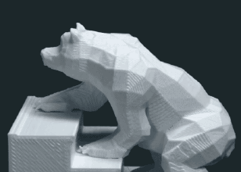

<!DOCTYPE html>
<html>
<head lang="en">
    <meta charset="UTF-8">
    <title></title>
    <style type="text/css">
        * {
            margin: 0;
            padding: 0;
            font-family: "\5FAE\8F6F\96C5\9ED1", Helvetica, sans-serif;
            font-size: 16px;
        }

        ul li {
            list-style: none;
            border-bottom: 1px dashed #ccc;
            padding: 5px;
        }

        img {
            width: 80px;
        }
    </style>
</head>
<body>
<ul id="newList">

</ul>
<script type="text/javascript" src="js/JSONData.js"></script>
<script type="text/javascript">
    var utils = {
        offset: function (curEle) {
            var l = curEle.offsetLeft, t = curEle.offsetTop, p = curEle.offsetParent;
            while (p) {
                if (navigator.userAgent.indexOf("MSIE 8.0") < 0) {
                    l += p.clientLeft;
                    t += p.clientTop;
                }
                l += p.offsetLeft;
                t += p.offsetTop;
                p = p.offsetParent;
            }
            return {top: t, left: l};
        }
    };
    //加载数据
    var initData = function () {
        var oUl = document.getElementById("newList");
        var frg = document.createDocumentFragment();
        for (var i = 0; i < dataAry.length; i++) {
            var cur = dataAry[i];
            cur.logo = cur.logo || "img/loading.jpg";
            cur.title = cur.title || "--";
            cur.desc = cur.desc || "--";
            var oLi = document.createElement("li");
            var str = "";
            str += "<div></div>";
            str += "<div>" + "<h2>" + cur.title + "</h2>" + "<p>" + cur.desc + "</p>" + "<div>";
            oLi.innerHTML = str;
            frg.appendChild(oLi);
        }
        oUl.appendChild(frg);
    }
    initData();
    //实现全局的延迟加载
    /*window.onload = function () {
     window.setTimeout(function () {
     var pic = document.getElementsByTagName("img");
     for (var i = 0; i < pic.length; i++) {
     (function (i) {
     var trueImg = pic[i].getAttribute("trueImg");
     var oImg = new Image;
     oImg.src = trueImg;
     oImg.onload = function () {
     pic[i].src = this.src;
     }
     })(i);
     }
     }, 2000);
     }*/

    //实现下拉图片加载图片
    //获取当前屏幕的高度
    var winH = document.documentElement.clientHeight || document.body.clientHeight;
    var loadImg = function () {

        //获取当前屏幕的卷去的高度
        var winT = document.documentElement.scrollTop || document.body.scrollTop;
        //获取当前图片的高度
        var pic = document.getElementsByTagName("img");
        for (var i = 0; i < pic.length; i++) {
            var trueImg = pic[i].getAttribute("trueImg");
            ~function (i) {
                if (!pic[i].isTrue) {
                    var oofH = pic[i].offsetHeight;
                    //获取当前图片距离body的偏移量
                    var offT = utils.offset(pic[i]).top;
                    if (oofH + offT <= winT + winH) {
                        var oImg = new Image;
                        oImg.src = trueImg;
                        oImg.onload = function () {
                            pic[i].src = this.src;
                            pic[i].isTrue = true;
                            showImg(pic[i]); //实现图片缓慢显示
                        }
                    }
                }
            }(i);
        }
    }
    function showImg(curEle) {
        var count = 0;
        var timer = window.setInterval(function () {
            count += 0.01;
            curEle.style.opacity = count;
            if (count >= 1) {
                clearInterval(timer);
            }
        }, 100)
    }


    window.onload = loadImg;
    window.onscroll = loadImg;

</script>
</body>
</html>